Resalta tu belleza, cuida tu salud y siéntete renovado en cada sesión
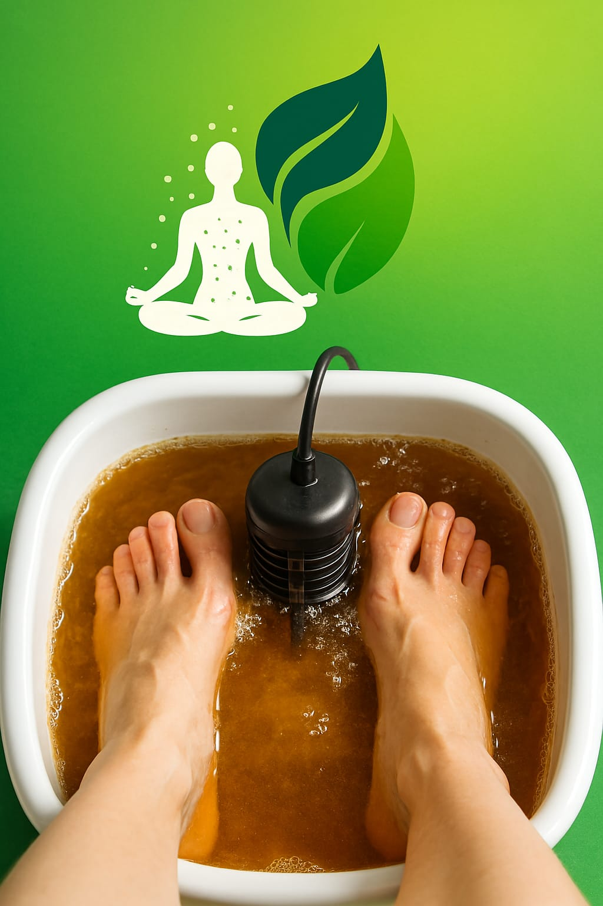
Beneficios: Eliminación de toxinas a través de los pies - Relajación y reducción del estrés - Mejora del sueño - Sensación de ligereza y bienestar general - Estimulación de la circulación
Cuidados: Hacer sesiones bajo supervisión profesional - Evitar si tienes marcapasos, embarazo o problemas cardíacos - Mantener buena hidratación antes y después - No exceder la frecuencia recomendada por el especialista
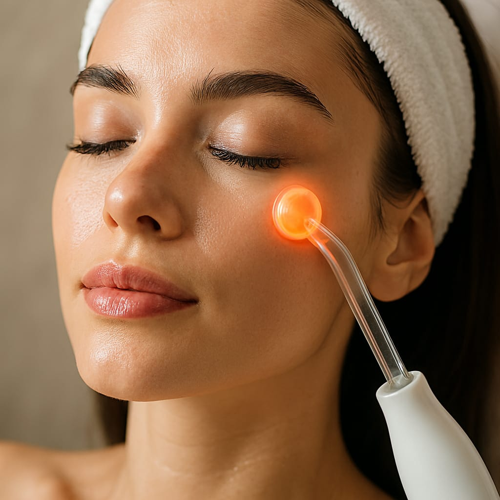
Beneficios: Estimula la circulación sanguínea y oxigenación de la piel - Favorece la producción de colágeno y elastina - Ayuda a disminuir acné y bacterias superficiales - Mejora la luminosidad y firmeza del rostro
Cuidados: Evitar exposición solar directa después del tratamiento - Usar protector solar diariamente - Mantener la piel hidratada con productos suaves - No aplicar maquillaje inmediatamente después de la sesión
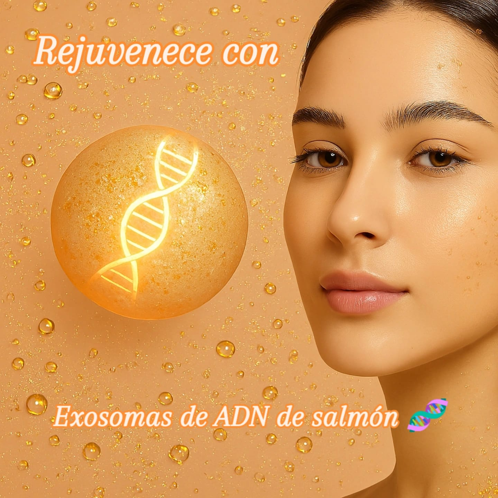
Beneficios: Regeneración celular - Más colágeno y elastina - Hidratación profunda - Antiinflamatorio y antioxidante - Rejuvenecimiento visible
Cuidados: Evitar sol directo (usar protector) - No maquillaje pesado inmediato - Hidratación constante - Evitar exfoliaciones o láser 1 semana - Seguir indicaciones del especialista
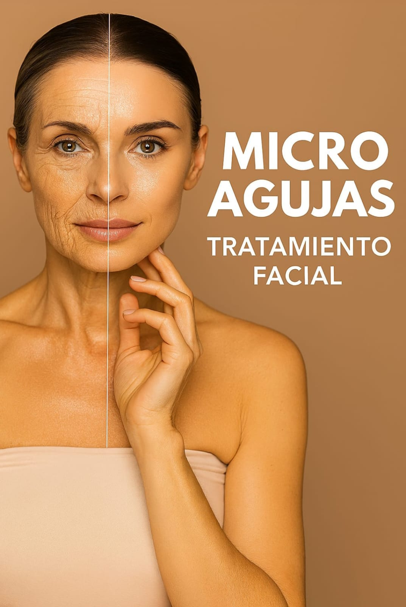
Beneficios: Estimula la producción de colágeno y elastina - Mejora textura y firmeza de la piel - Reduce cicatrices de acné y estrías - Disminuye líneas finas y arrugas - Favorece la absorción de productos tópicos
Cuidados: Evitar sol directo y usar protector solar - No aplicar maquillaje pesado las primeras 24 h - Mantener hidratación constante - Evitar exfoliaciones o tratamientos agresivos por unos días - Seguir las recomendaciones del especialista
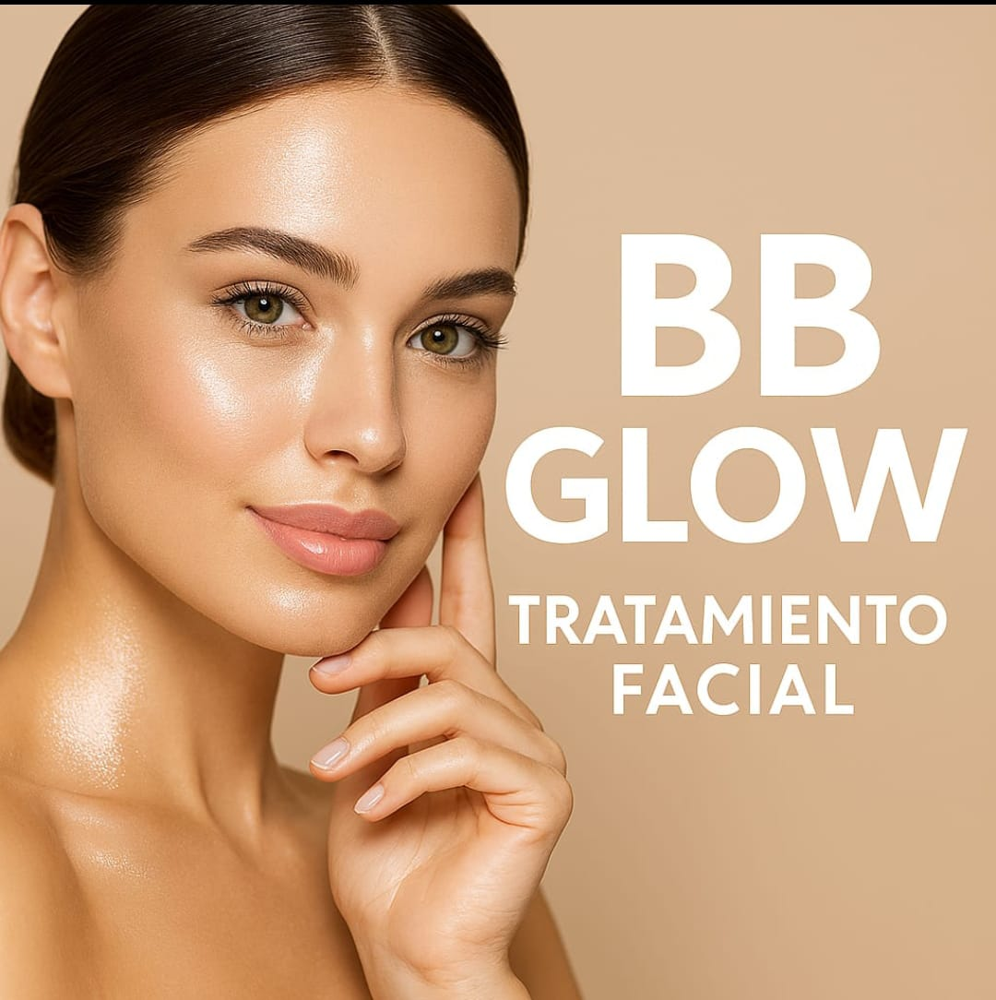
Beneficios: Efecto de piel más uniforme y luminosa - Disminuye manchas, pecas y cicatrices leves - Atenúa líneas finas y poros dilatados - Hidratación y nutrición profunda - Apariencia de “piel maquillada” sin maquillaje
Cuidados: Evitar sol directo y usar protector solar - No maquillaje pesado las primeras 24–48 h - Mantener hidratación constante - Evitar exfoliaciones o tratamientos agresivos por unos días - Seguir las recomendaciones del especialista
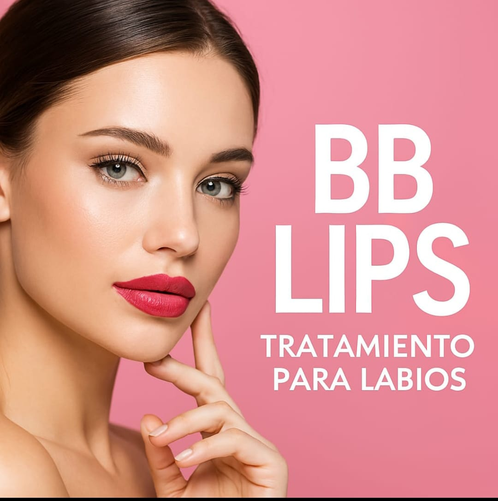
Beneficios: Labios más hidratados y nutridos - Color uniforme y efecto de “labios maquillados” natural - Atenúa resequedad y pequeñas imperfecciones - Mejora la textura y suavidad - Resultado semipermanente con aspecto saludable
Cuidados: Evitar sol directo y usar protector labial con SPF - No aplicar maquillaje ni labiales pesados las primeras 24–48 h - Mantener hidratación constante con bálsamos suaves - Evitar comidas muy calientes o picantes inmediatamente después - Seguir las recomendaciones del especialista
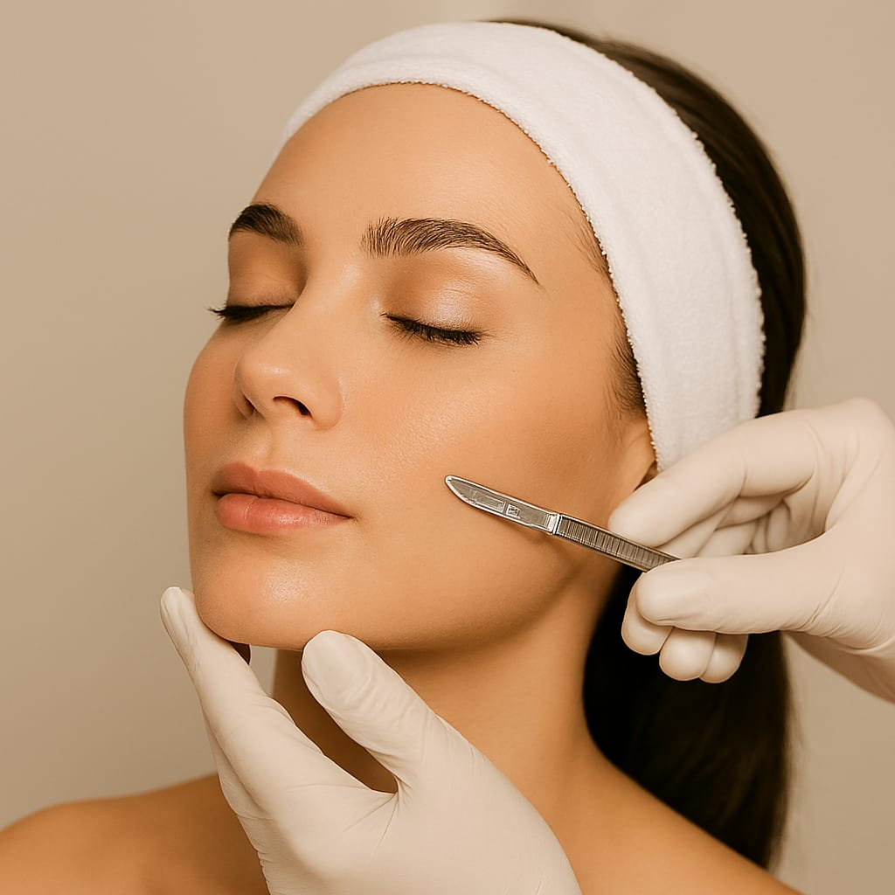
Beneficios: Elimina células muertas y vello fino (peach fuzz) - Mejora la textura y luminosidad de la piel - Favorece la absorción de productos cosméticos - Deja la piel más suave y uniforme - Resultados inmediatos y sin tiempo de recuperación
Cuidados: Evitar sol directo y usar protector solar - No aplicar maquillaje pesado las primeras 24 h - Mantener hidratación constante - Evitar exfoliaciones o tratamientos agresivos por unos días - Seguir las recomendaciones del especialista
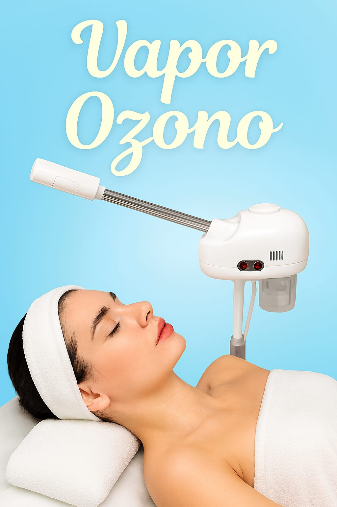
Beneficios: Limpieza profunda de poros - Eliminación de impurezas y exceso de grasa - Hidratación y suavidad de la piel - Estimula la circulación sanguínea - Efecto relajante y preparación para otros tratamientos
Cuidados: Evitar exposición solar directa después de la sesión - Usar protector solar diariamente - Mantener hidratación constante - No aplicar maquillaje pesado inmediatamente - Seguir las recomendaciones del especialista
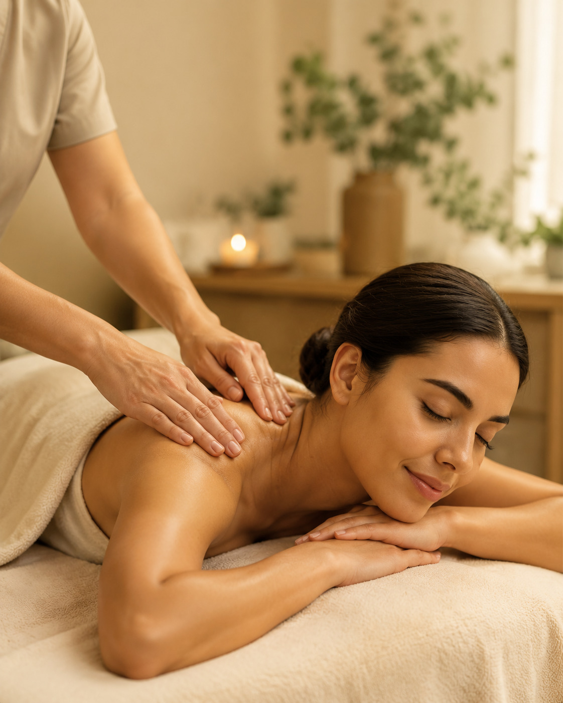
Beneficios: Reduce el estrés y la ansiedad - Mejora la circulación sanguínea - Relaja músculos y alivia tensiones - Favorece el descanso y la calidad del sueño - Sensación general de bienestar
Cuidados: Evitar comidas pesadas justo antes de la sesión - Mantener buena hidratación después del masaje - Descansar y no realizar esfuerzos físicos intensos inmediatamente - Seguir las recomendaciones del terapeuta
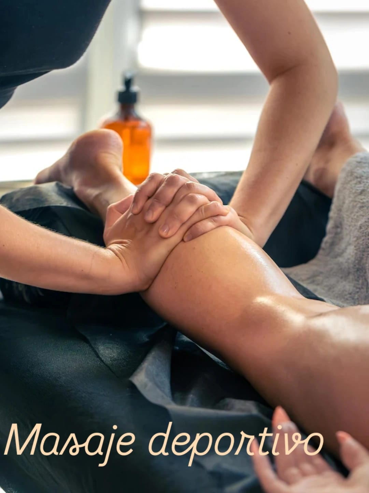
Beneficios: Reduce la tensión muscular después del ejercicio - Previene lesiones y favorece la recuperación - Mejora la circulación y oxigenación de los tejidos - Aumenta la flexibilidad y el rendimiento físico - Alivia dolores musculares y contracturas
Cuidados: Evitar entrenamientos intensos justo después de la sesión - Mantener buena hidratación para eliminar toxinas - Descansar y permitir la recuperación muscular - Seguir la frecuencia recomendada por el especialista - Informar al terapeuta sobre lesiones o molestias previas
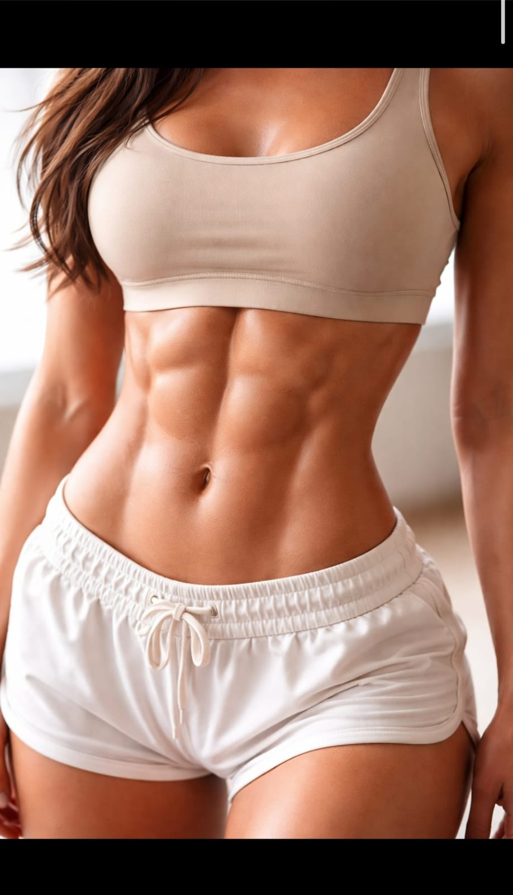
Beneficios: Reduce la retención de líquidos y la hinchazón - Estimula la circulación linfática y sanguínea - Moldea la silueta y define la zona abdominal - Favorece la eliminación de toxinas - Sensación de ligereza y bienestar inmediato
Cuidados: Mantener buena hidratación para potenciar el drenaje - Evitar comidas muy pesadas justo antes o después de la sesión - No realizar esfuerzos físicos intensos inmediatamente después - Seguir la frecuencia recomendada por el especialista - Informar al terapeuta sobre condiciones médicas previas
Beneficios: Define y resalta la zona abdominal - Reduce líquidos y toxinas acumuladas - Mejora la circulación y oxigenación - Sensación de firmeza y tonificación inmediata - Levanta y da forma a los glúteos - Reduce celulitis y mejora la textura de la piel - Estimula la circulación y el drenaje linfático - Apariencia más firme y tonificada
Cuidados: Mantener buena hidratación - Evitar comidas pesadas justo antes o después - No realizar esfuerzos físicos intensos inmediatamente - Seguir la frecuencia indicada por el especialista
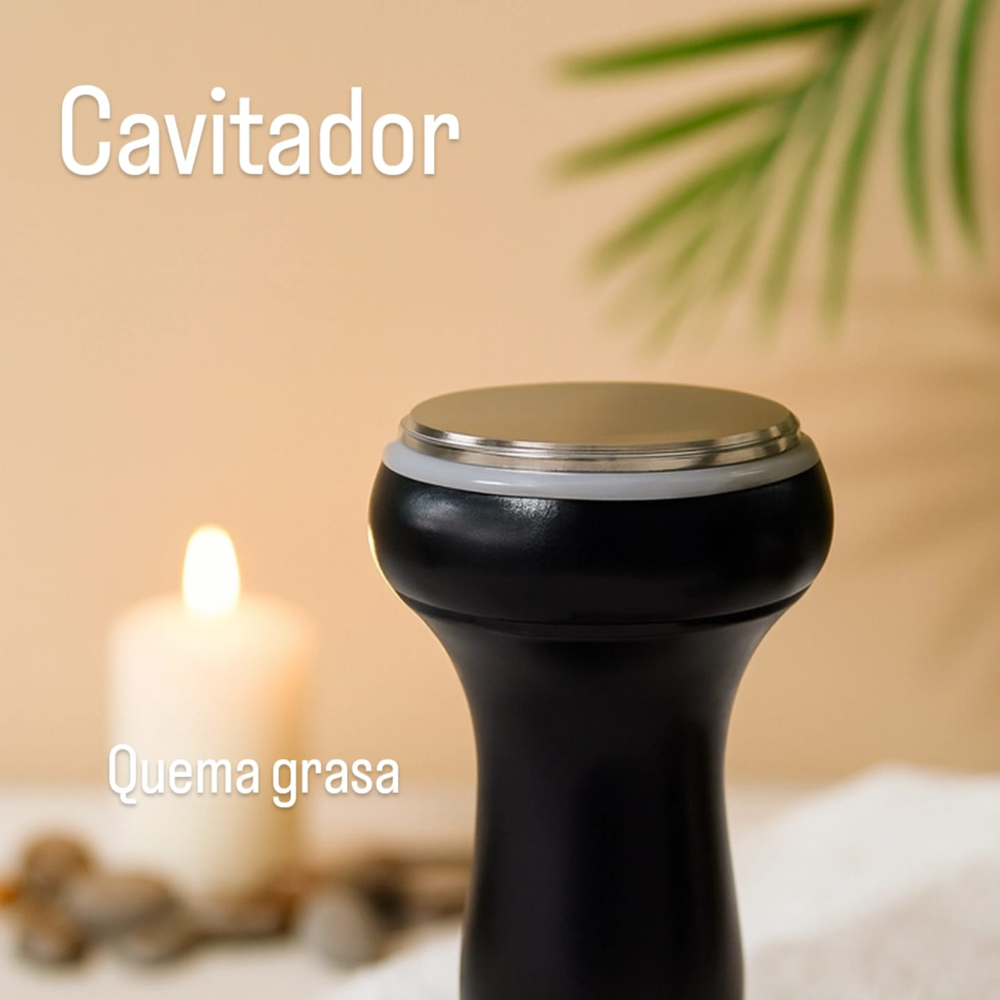
Beneficios: Reduce grasa localizada sin cirugía - Moldea y define la silueta - Favorece la eliminación de toxinas y líquidos - Mejora la apariencia de celulitis - Resultados visibles desde pocas sesiones
Cuidados: Mantener buena hidratación antes y después - Evitar comidas muy grasas inmediatamente después - No realizar ejercicio intenso justo tras la sesión - Seguir la frecuencia indicada por el especialista - Informar sobre condiciones médicas previas
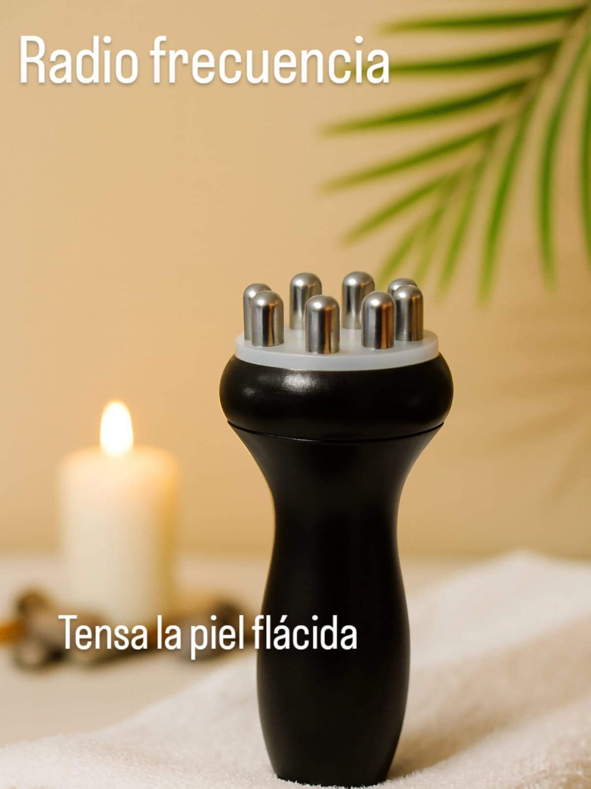
Beneficios: Estimula la producción de colágeno y elastina - Mejora la firmeza y elasticidad de la piel - Reduce líneas finas y arrugas - Favorece la circulación y oxigenación de tejidos - Efecto reafirmante y rejuvenecedor visible
Cuidados: Evitar exposición solar directa y usar protector solar - Mantener hidratación constante - No aplicar maquillaje pesado inmediatamente después - Evitar tratamientos agresivos (peelings, láser) por unos días - Seguir las recomendaciones del especialista
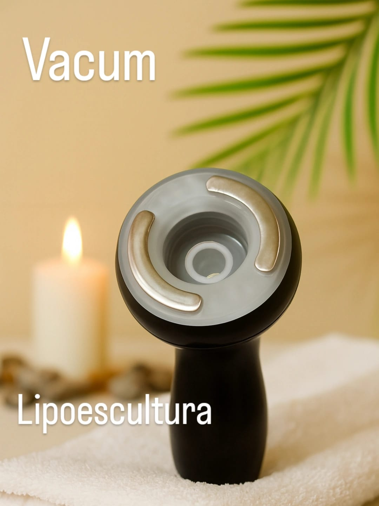
Beneficios: reduce grasa localizada, mejora circulación, disminuye celulitis, tonifica y reafirma la piel.
Cuidados: evitar sol directo, mantener hidratación, no exfoliar ni aplicar láser por una semana, seguir siempre las indicaciones del especialista.
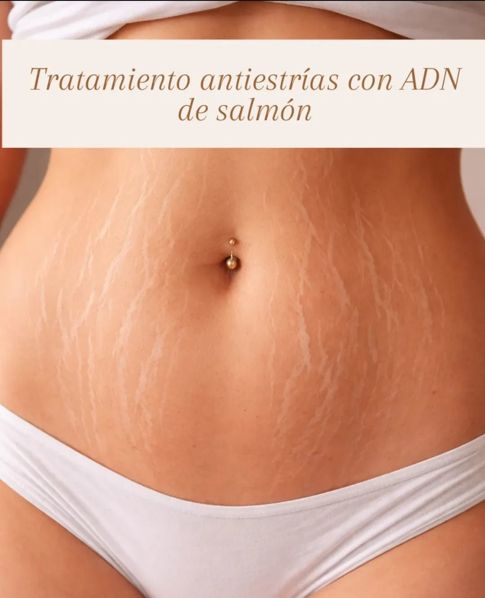
Beneficios: Regeneración celular profunda en zonas con estrías - Estimula colágeno y elastina para mejorar firmeza - Atenúa la apariencia de estrías recientes y antiguas - Hidratación intensa y reparación de la piel dañada - Mejora la textura y uniformidad cutánea
Cuidados: Evitar sol directo y usar protector solar - Mantener hidratación constante con productos suaves - No aplicar exfoliaciones ni tratamientos agresivos en la zona por unos días - Seguir la frecuencia y pautas indicadas por el especialista - Ser constante en las sesiones para mejores resultados
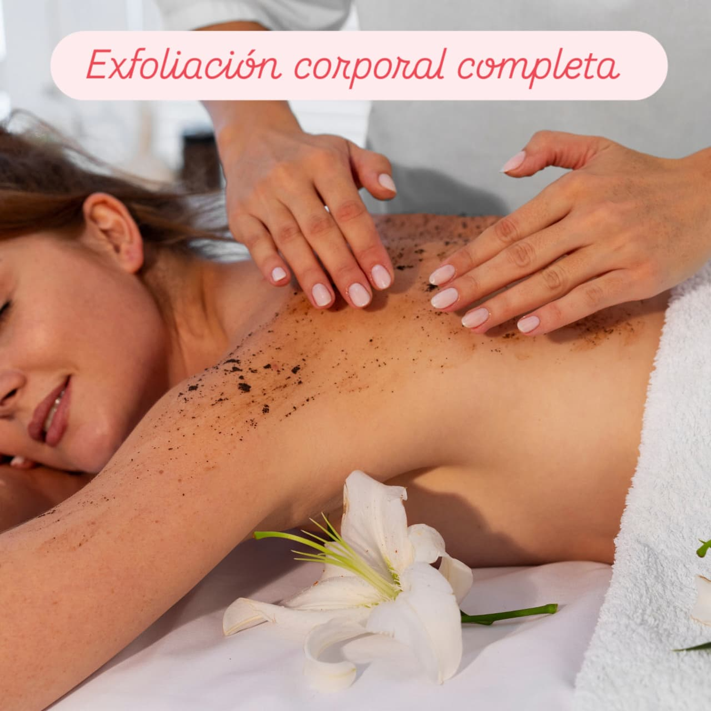
Beneficios: Elimina células muertas y renueva la piel - Mejora la textura y luminosidad - Favorece la absorción de productos hidratantes y nutritivos - Estimula la circulación sanguínea - Sensación de suavidad y frescura inmediata
Cuidados: Evitar exposición solar directa y usar protector solar - Mantener hidratación constante - No aplicar productos agresivos (peelings fuertes, ácidos) en los días siguientes - Seguir la frecuencia recomendada por el especialista - Usar cremas nutritivas para prolongar el efecto
Reserva tu espacio al 6084-1047
O directamente en WhatsApp: Haz tu reserva aquí